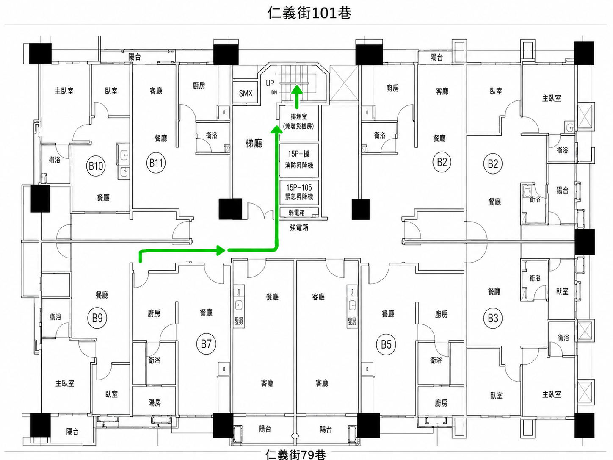

安全
主動守護，讓每一次回家都更從容。
整合門禁、設備、災害警示與社區通訊，將安全判斷轉化為清楚可行的生活指引。
整合門禁、設備、災害警示與社區通訊，將安全判斷轉化為清楚可行的生活指引。
AI 協助整合電梯與公設設備的使用趨勢、異常紀錄與維護資料，讓社區更早掌握狀態，提前安排檢查。
以手機 Keyless 技術感應辨識，靠近公區門禁即可安全解鎖；不採集臉部資料，讓社區入口順暢又安心。

火警發生時，手機即時呈現火警位置、樓層逃生路線與避難提醒，並啟動大樓安全連動，讓家人在關鍵時刻有清楚方向可以依循。
地震發生時，手機即時呈現預估震度、震央資訊與避難提醒，並啟動大樓安全機制，讓您在關鍵時刻更快掌握狀況進行因應。
以手機與平板取代傳統室內對講機，無論在家中或外出，都能接聽門口機視訊、遠端開門，也減少日後佈線與設備維修負擔。